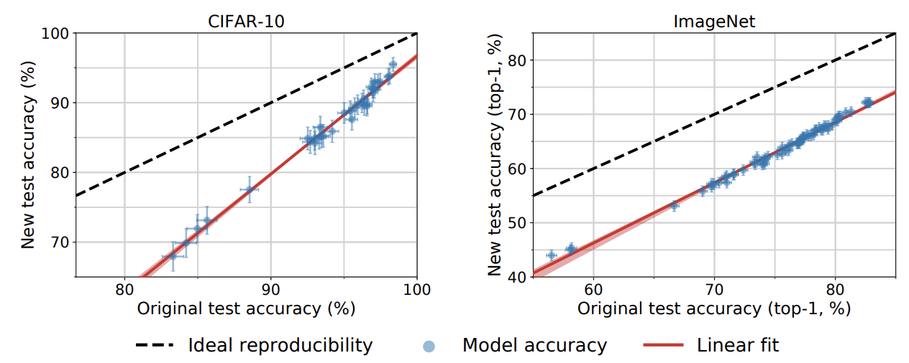
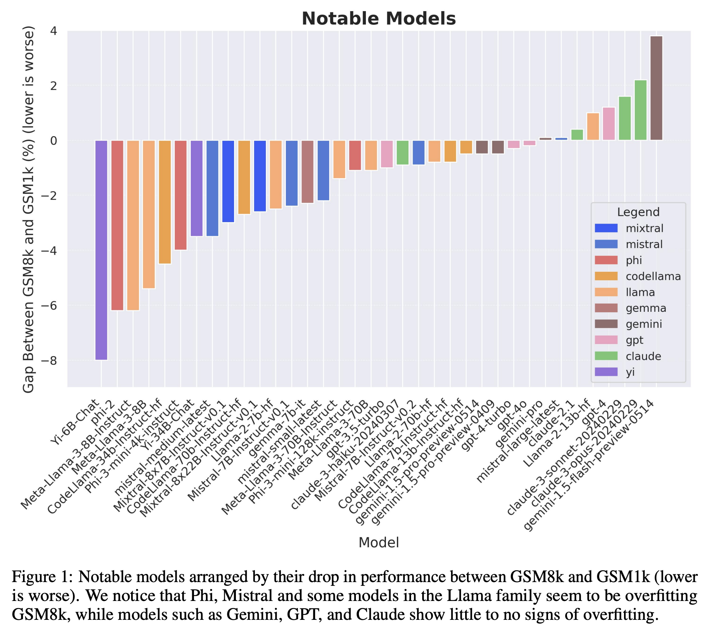

Benchmaxxing
Table of Contents
Benchmaxxing Mechanisms
I've been thinking a bit about benchmarks recently. In machine learning, once a benchmark gets released, each subsequent hill-climbing step seems to confer less and less signal about the underlying model. Performance upon the benchmark will eventually saturate, and researchers will move on to some other benchmark.
I often see discussion around benchmarks seemingly suggesting that this phenomenon is due to all the labs directly training on the test set in order to inflate performance. While I'm certain this happens, I think there are some works which can shed some more nuanced insight into how and why this happens.
Do Imagenet Classifiers Generalize To Imagenet?
A paper I refer back to frequently is Do ImageNet Classifiers Generalize to ImageNet?
This is a 2019 computer vision paper, but the overall insight is still generally applicable in the language model era. When you train a model, that model is expected to be performant upon in-distribution data. We often use benchmarks as a proxy for "performance on things I care about", and ImageNet was such a benchmark: if your model is above the field at this benchmark with lots of different objects in it, it will probably be above the field at whatever you want to do with it, too.
Perhaps the most in-distribution data imaginable here is the ImageNet data, but more of it. You've already trained on all of the training data, and there's only one test set. If there was a second test set consisting of more-or-less indistinguishable data from the first test set, what do you think you would get on that set? Well, we know that data would be in-distribution, and we have this first test set which says we do X% upon in-distribution data. So you might think, logically, that you would probably score around X% on the other test set, also.

This paper does a funny thing: it gets more data using the same process as the original set, in order to create another test set with the closest possible in-distribution distribution possible. After painstakingly reproducing a mini-imagenet and mini-cifar10, they find that these models do way worse on the second test set despite it all being almost the exact same type of data. Oh dear.
There are some really interesting properties here. For one, it does seem that all the improvements upon the benchmark were still real improvements. Models seemed to generally be in the same order1: a model which was better on dataset \(X\) would still be better on dataset \(X'\). The paper makes the argument that this rules out "adaptive overfitting", i.e. gains which were related to things like hyperparameter tuning rather than real gains. The line of improvement is still basically parallel with the original test set performance, just equally lowered for all models. If later models were just benefitting from "fake" hyperparameter hill climbing, you'd expect diminishing returns on the second test set.
Likewise, if you limit the data to only the easiest examples with more aggressive data cleaning, you can reproduce the results almost exactly. This is kind of strange, when you think about it. It makes sense that when you remove the hard examples from a proxy benchmark, performance on the proxy benchmark will go up. But it seems strange that the takeaway seems shaped like "all the examples in the original dataset are easy ones".
Does Grade School Math Performance Generalize To Grade School Math
In 2024 Scale put out A Careful Examination of Large Language Model Performance on Grade School Arithmetic, which is another great paper I talk about all the time.
This paper is conceptually very similar to the Imagenet one from 2019: they collect 1000 examples designed to be as close as possible to the GSM8k benchmark, and the examine which language models degrade and which ones don't. In the language model era, the notion of "in-domain" is a little different now, though. At internet scale, it's a little bit hazy to understand what data is even in your pretraining set, since the amount of data you're using is already so large. It's really easy to not even notice that the test set for a particular benchmark is literally already in your training data, which makes the entire benchmark completely moot.
Obviously, this is even maximally assuming good faith. The test set could also just be directly put there, on purpose, to inflate the benchmarks on purpose. In a 2026 interview, Yann LeCun seems to have insinuated that Meta was doing this for the Llama models.
"Zuckerberg placed more pressure on the GenAI unit to accelerate AI development and deployment, which led to a communication breakdown, LeCun says.
— Stefan Schubert (@StefanFSchubert) January 2, 2026
...
[More details, see beloe]
A lot of people have left, a lot of people who haven’t yet left will leave."
(FT) pic.twitter.com/ELjqfCqTd7
Most of the labs make claims that they perform some degree of data cleaning in an attempt to avoid this. But it's difficult to know how seriously to take each of the lab's claims, since almost all of this is closed source (even among the labs that release open-weights). This paper had some interesting results: most of the closed western labs showed the highest generalization to this in-distribution data.

I have always felt that this chart communicated a lot. I've spoken in the past about my appreciation for the Phi work in particular: benchmarks are used to depict capability, but how faithful that depiction is to the real capability is often unclear between models.
Benchmarks are a funny thing. The implicit thing with these tables in most papers is "this model is good at ~everything, here are some arbitrary capabilities." The Phi models are good at almost nothing except for these benchmarks. Yet the format is the same!
— Eryk (@erykbanatt) January 8, 2025
What Are Some Reasons This Might Happen?
This is a really curious phenomenon. There are obviously nefarious explanations (shaped like "they deliberately included test examples to juice the benchmarks"), but these explanations are typically the only ones that ever get discussed. But we can see from the GSM paper that the models exhibit degradation in varying degrees, with some obviously much worse than others.
Likewise, it seems hard to square with the ordering in the ImageNet paper, which seems to describe a related phenomenon with no real evidence of foul play (i.e. models degrade upon new ostensibly in-distribution data, but the ordering does not change in a manner that suggests anybody trained on test). It's potentially interesting to explore a few non-malicious angles which could cause stuff like this to happen.
Data Cleaning Angle
The ImageNet paper defines three "gaps" which sum to the total degradation of the models:
- Generalization Gap: the standard gap between training data and in-distribution unseen data
- Adaptivity Gap: adapting the model to the test set via hyperparameter tuning
- Distribution Gap: perhaps "in-distribution" is not perfectly defined, and this seemingly in-distribution data creates a distribution shift regardless
The original paper conjectures that an adaptivity gap would have produced diminishing returns in newer models, which was not observed. As a result, their main guess is that the annotation process they used was the primary cause of such a large drop. Using cleaner, higher-consensus labels produces a result more in-line with the actual ImageNet scores, but this more aggressive data cleaning process inevitably also makes the dataset easier2.
There is a sensible angle here which attributes the majority of this purely to data cleaning. In the ImageNet example, this happens in the new test set (making it cleaner makes performance more in-line), and in the GSM1k example, it's in the pretraining phase (being more conscientious about removing test set leakage in pretraining causes less overfitting).
One could argue that the closed and open source LLM labs have slightly different incentives on this point. Labs that release open weights have a greater incentive to push the number up, since the benchmark "victory" over other models is their win condition for getting lots of citations. The closed labs by comparison are directly selling the actual capability, so the actual model performance matters way more than the benchmarks3. In this case, it makes sense that the closed labs care more about cleaning their pretraining set, since an accurate picture of their own capabilities is comparatively much more important than climbing the benchmarks themselves.
Evolutionary Angle
A funny thing about hill climbing benchmarks is that the machine learning community is, in effect, performing a sort of evolutionary neural architecture search as a big collective.
Different architectures have different inductive biases. Most ML people know this to some degree, but underestimate how powerful these actually are. Adam Gaier and David Ha showed in 2019 that if you perform a neural architecture search, you can get 92% on MNIST even if you literally randomize the weights of the network. I've seen this referred to as "without training" but that's not quite right; it's moreso that we're training by optimizing the architecture, rather than optimizing the weights.
Consider the worldwide process of making new ML models. Even if they aren't overfit via tuning or test set leakage, models which do not improve the frontier do not get published, and models which do improve it spawn yet more derivative works incrementing upon them. The benchmark is in some sense acting as the fitness function, measuring how worthy of publication each idea is. Papers which are successful "reproduce" and spawn other papers with similar conceptual DNA. All of this has the effect of essentially training upon the test set using an evolutionary algorithm, very very slowly, one paper at a time.
Even with zero foul play at all, the longer any benchmark exists the more likely we are to arrive at methods which are overfit to specific benchmarks, just through random chance paired with this "evolutionary search". This is what underscores the need for a revolving door of benchmarks, and why sometimes benchmark performance seems to not line up so cleanly with people's experiences using the models.
It's worth noting that, unlike hyperparameter tuning on the test set, this does not necessarily imply diminishing returns as we improve upon the benchmark over time. The benchmarks truly just get less valuable the longer they exist, even if improvements upon them are genuine, in-distribution improvements, even if they are potentially brittle and subject to degradation from subtle domain shifts.
Conclusion
Benchmaxxing is ubiquitous, and very easy to see everywhere in language model research. The different labs directly climb benchmarks to varying degrees, and this all should not be misconstrued as saying "open models benchmaxx and closed labs don't"4. But I think benchmaxxing is not "one single thing", nor is it always just "deliberate training on the test set". I think it's a more of a symptom than a disease, and there are both many possible causes and varying degrees of severity.
Good, fresh benchmarking is very important! Goodhart's Law suggests that it's easy for tunnel visioning on known criteria to cause problems. People often think this is only due to "malicious compliance" to maximize that criteria, but it also naturally happens just by virtue of existing.
Footnotes:
It also seems notable that this didn't catch anybody cheating by literally training on the test set. Good job, community!
The imagenet paper used a consensus of Mturk annotations for the labels, and there's a little assumption here that non-unanimous, occasionally mislabeled examples are likely to be mislabeled as such due to inherent ambiguity in the data, i.e. using examples that are genuinely harder, even for the model. I think this is probably not always true (I think humans and networks probably have different notions of difficulty) but it's probably reasonable enough for the purposes of this discussion.
There are obvious exceptions to both of these, of course, it's just a high level cartoon of the situation. This is in large part why Claude Opus 4.5 mostly doesn't report many benchmarks at all except for coding, since that's the meat of what people want from it.